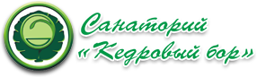
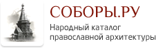
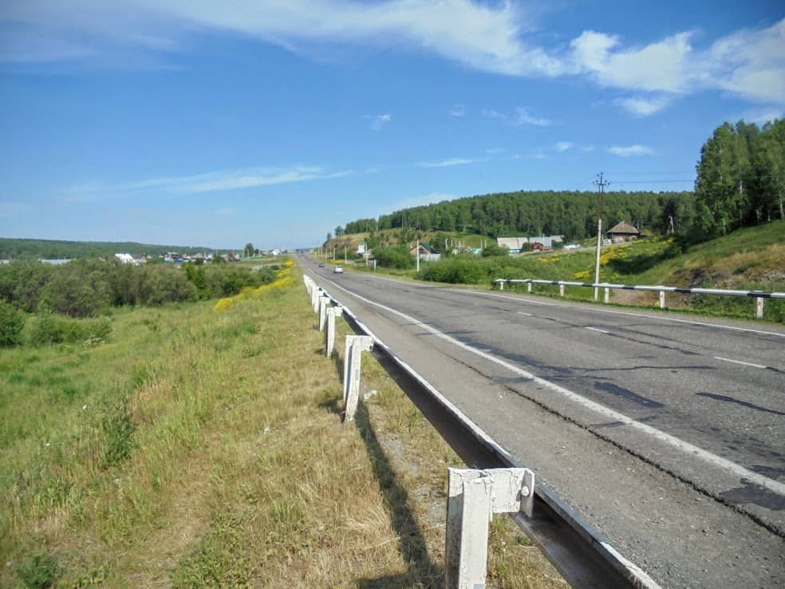
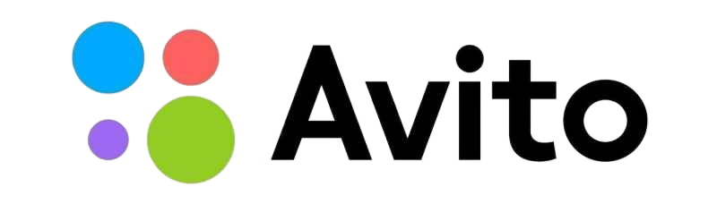

| Фотографии | Видео |
Подъя́ково - деревня в Щегловском сельском поселении Кемеровского района Кемеровской области. Находится на правом берегу реки Томь, в 25 километрах севернее города Кемерово. Ближайшие сёла: Старая Балахонка в 3,5 км юго-восточнее и Подонино чуть севернее на другом берегу реки.

Деревня основана в 1700 году крестьянами Подъяковыми. Среди основателей были также фамилии Терехиных и Пашиных. В июле 1962 года в деревне Подъяково Кемеровской области состоялся VIII Всероссийский слет юных туристов, в котором приняли участие 350 человек из разных уголков Советского Союза.
В санатории «Кедровый бор» (кнопка ниже) проводится ежегодный мотофестиваль «Полный газ». В деревне есть: часовня Казанской иконы Божией Матери (Соборы.ру), гостиничный комплекс «Загородный Клуб», летний лагерь Кемеровского университета - все это мы можете наблюдать в фотографиях. Всего насчитывается 7 улиц и 3 реки (Большая Подикова, Малая Подикова и Томь).


В Подъяково ходят следующие автобусы: №161, №161у, №161Э, №186, №540, №559. Их рассписание вы можете узнать на сайте GoOnBus.ru. Достаточно лишь нажать на кнопку "Междугородние маршруты" и ввести необходимый номер автобуса.
Благодаря Авито вы можете взглянуть на активные объявления в Подъяково. Нажав на следующую кнопку вас перебросит на этот сайт.
